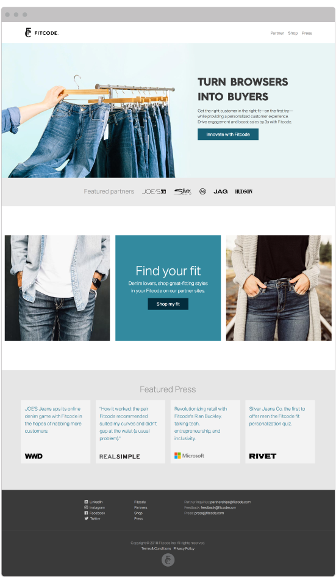
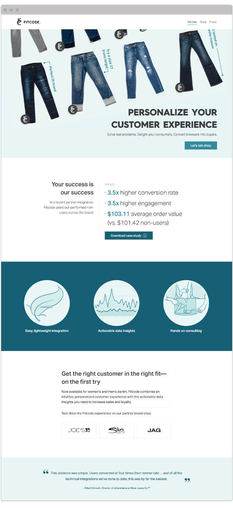

Fitcode Website
Dec 2014 - Aug 2018
Role: Scrum Master, UX/Web designer, Front-end Developer

The Fitcode website is where the Fitcode brand really comes to life. I have been involved in the visual design, UX design, and HTML/CSS code developement since it's launch in 2015, and have focused over time on making sure it is fully responsive and mobile friendly. Here are samples of the latest web design iteration.
Problem
We had a site geared towards retail when we needed a site geared towards partnerships. We had to rehaul everything. Boutique was a proof of concept but wasn't being used that much by users and we needed to pivot to a more partner focused web experience.
- fitcode boutique was not frequently used or generating measurable sales
- our business needed to focus on gaining partnerships
- our product was evolving to be present on partner sites, and we didnt need the boutique anymore to sell our concept
Process
1. First thing I did was revisit what I knew about how to be sucessful when building a website. I thought back to what I'd learned at conferences and pulled a the Elements of User experience from my bookshelf and dove right back in. I combined that with processes I went through with my coworkers at Ubermind and remembered what worked and what didnt.
2. I sketched out a plan for how I was going to get the info I needed from my team members to be able to start the design process. I needed a meeting room and A LOT of post it notes.
3. I needed to get a strategy. I needed to get business goals out of stakeholders and I needed to have team members hear each others ideas, I needed them to think about the users needs as well as their needs. So I led the team in a brainstorm session.

White board after a planning meeting
4. A lot of post it notes representing ideas and features of the site came out of that meeting. The next meeting was organizing those ideas into buckets, sizing the features based on Agile methods, and paring down the amount of features to minimum viable product that could be built in a timeframe that worked for our CEO.
5. I took all this info and wrote trello tickets of each feature that we agreed to build, filling up the backlog, and making sure all the insights from the meeting were captured and organized to fit into our weekly scrum process.
6. I wrote user stories with our copy editor and we categorized those user stories and boiled it down to a few key personas we needed to focus on. A. the shopper who wanted to use Fitcode while they shopped, and B. the potential partner who wanted to get in touch with our NB team. We ended up writing a creative brief, that had this info and more into it.
7. Now I could focus on design, I made a site map and few user flows, all pretty straight forward, and dove straight into wire frames.

Example of some user flows

Wireframe for Landing Page

A rough draft of the hero image on the Partner page showing original photos

Sketches of spot illustrations on Partner page
9. Soon I was helping our dev team by writing the html/css to bring my designs to life on the screen.
10. As we got closer to launch I organized the bug bash by setting a time frame where all the team members would pitch in and test the site on all the devices they had, and capture the list of bugs in a spreadshhet the dev team could work off of, and coodinate with dev and our CEO on when it was ready to launch.
Results
We were able to build this site and launch it on time, this all happened in a month and a half. Here are samples of the final designs that went live.
Landing page - desktop
Partner page - desktop

Landing page - mobile